Você apareceu do nada...
Chegou sem prometer nada
E me mostrou o mundo
Como se eu não o conhece-se
Mas diferente de como eu o conheci
Eu enxerguei pelos seus olhos
Por fim consegui entender o que
Ele possui de tão belo
🌼

Sinto-me em um emaranhado de cordas...
Preso nos fios dos meus pensamentos…
e
É estranho como aquilo que antes parecia ruim se tornou algo bom.
Talvez seja porque agora
Meus pensamentos sejam só sobre você
E, de alguma forma,
Me perder neles
Já não me assusta mais —
Porque é nos seus olhos
Que eu me encontro,
Sem nunca me perder
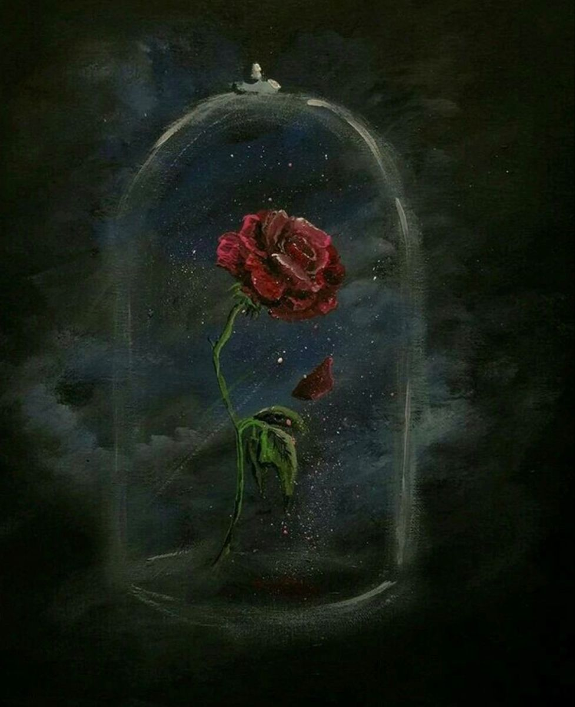
Posso até ser simples,
como uma margarida...
mas o meu amor por você
não sinto que é algo que cabe em algo simples
ou
em um pote de vidro
Quando estou com você,
Não sinto borboletas no estomago
Sinto tulipas,
florescendo de um jeito
que eu nem sei explicar
Quando estou contigo
sinto-me perdido
Em um vasto Jardim Florido
um Jardim ao qual meus olhos
Não enxergam o Fim...
Um Jardim, com Dezenas
Talvez Centenas ou Milhares
De Lírios azuis e vermelhos
Cheio de Margaridas,
e rosas vermelhas
que nunca deixam de florescer.
E no meio de tudo isso
é você e seu sorriso
que faz cada flor
ter seu proprio sentido.
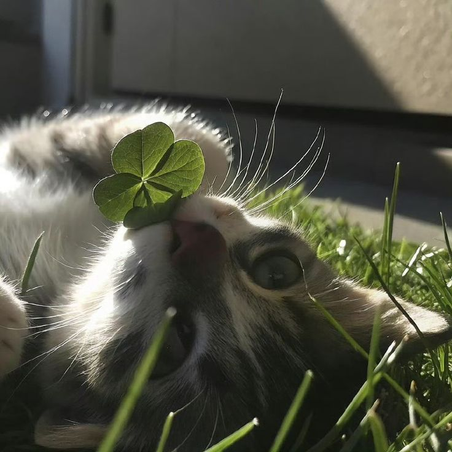
Você diz que é uma versão melhorada minha,
mas quando estou com você
Sou eu que sinto que brilho
Não é um brilho meu---
é o seu que me ilumina
Quando eu tô com você,
me sinto como a lua,
esperando pelo brilho do teu sorriso
pra existir no céu
Mas ao mesmo Tempo
Sou um girassol
Preso em você,
sem conseguir desviar o olhar do sol...
e sendo sincero
nem sei se eu quero.
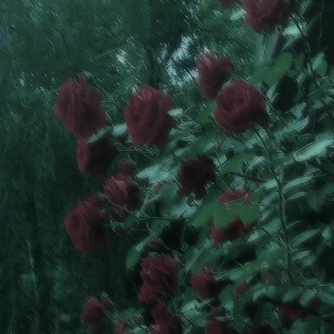
Pode parecer meio bobo,
mas você tem ideia
do quando eu comecei a
gostar de vermelho?
o quanto eu comecei a gostar
das cores, das plantas
dos animais e das pessoas
e o incrivel que você
nunca nem tentou me fazer
gostar disso
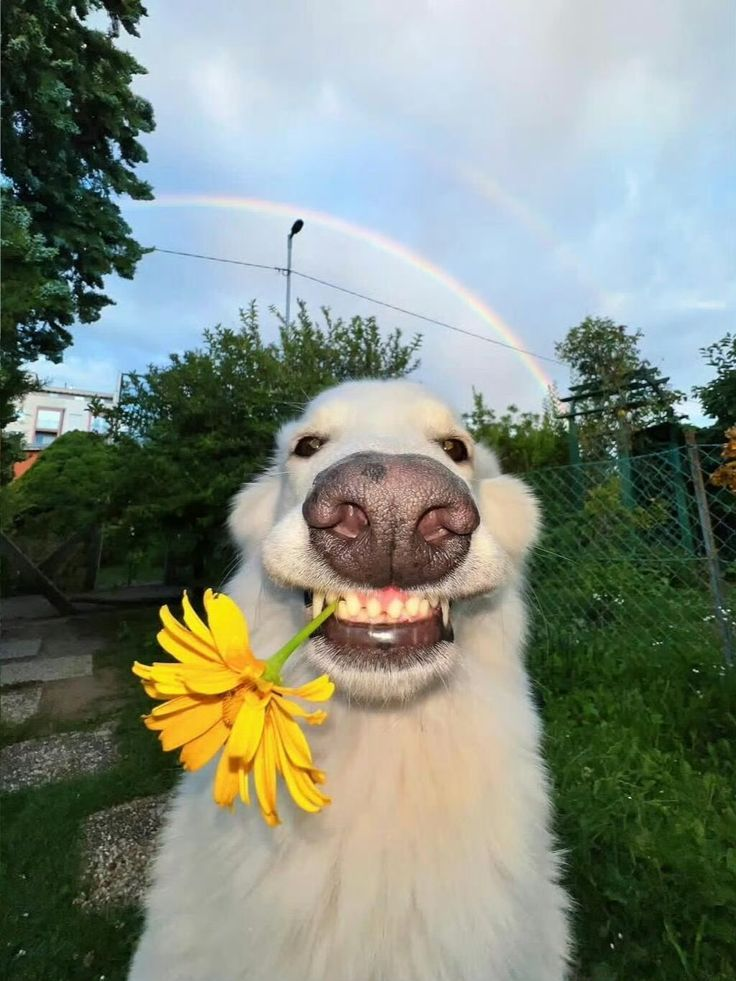
É incrivel como apenas
Você sendo você mesma
Me deixa preso no teu jeitinho-
no teu sotaque,
na forma como as palavras se embaralham
quando você fala
E
Mesmo assim eu entendo.
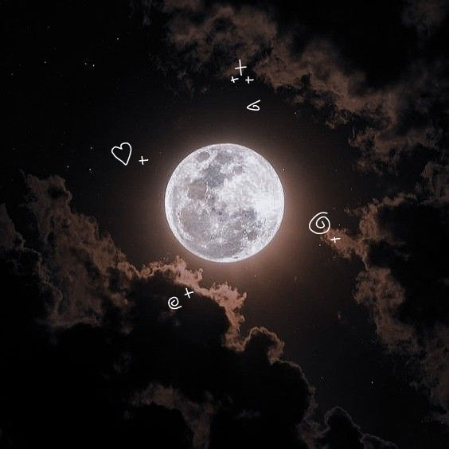
Você tem uma forma única de exister que você tem yoyo
Meu amor.
Eu te amo tanto
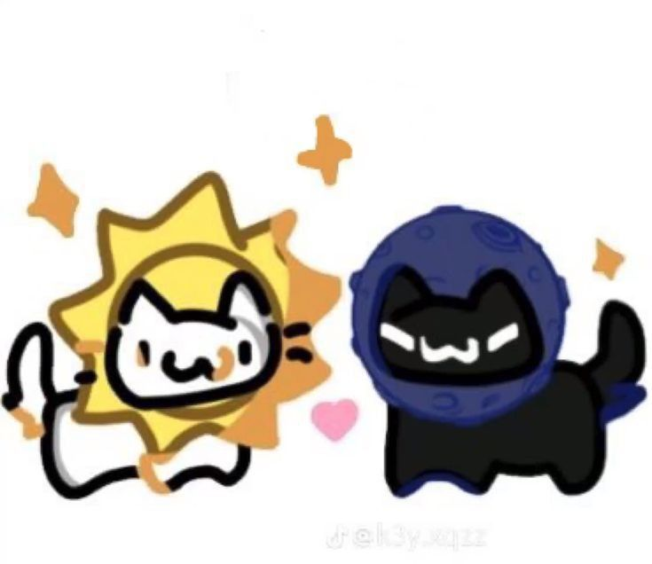
No final eu sou o Gato preto.
Eu nunca fui bom com poemas,
na verdade nunca nem tentei...
mas tentar de verdade
mas você, Yorrana, meu amor
merece muito mais do que qualquer palavra.
"Eu te daria o mundo"
"Mas ele é sujo demais pra você"
O mundo não merece você
Eu não so mudaria por você...
eu viveria por você.
E me apaixonaria de novo,
e de novo,
e de novo,
e de novo...
como me apaixono por você todos os dias.
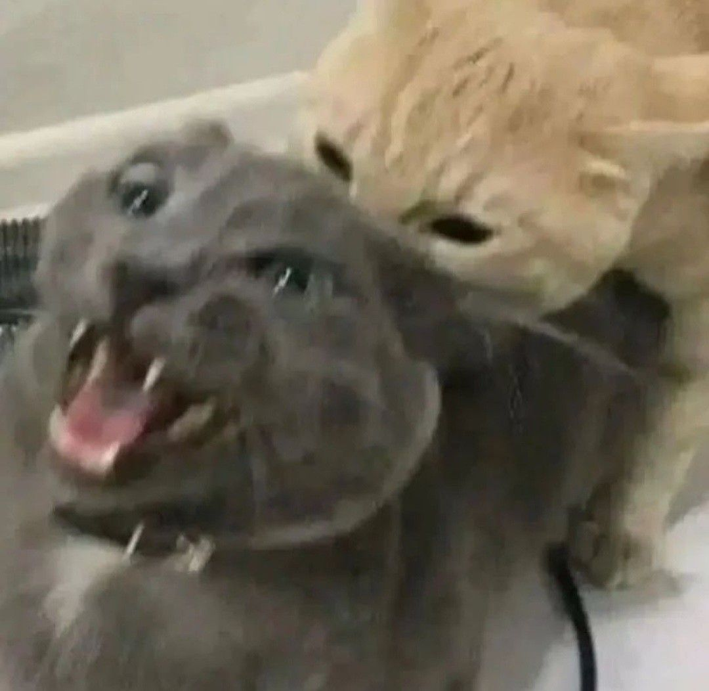
A gente briga as vezes, eu sei,
mas você ja paercebeu
que até brava você é linda?
Ou quando finge estar brava
e nem consegue se manter séria?
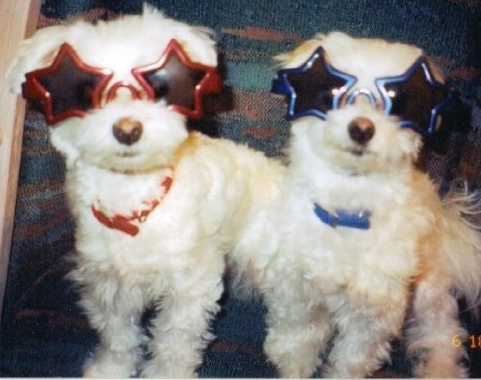
Eu sempre achei essas coisas de casal meio sem graça...
Cartinhas, Músicas, Roupa combinando...
mas com você
eu quero tudo isso
e muito mais.
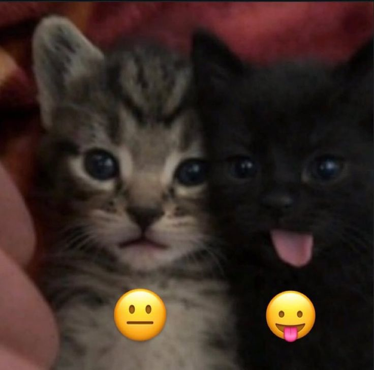
Eu detesto o toque de pessoas...
ou demonstrações de afeto
mas com vocé é diferente,
Com você eu quero abraço,
beijo,
carinho,
andar descalso na praia,
assistir o por do sol,
te fazer rir até suas bochecas ficarem doendo..
quero ser o teu conforto
e o meu coração ser o teu conforto
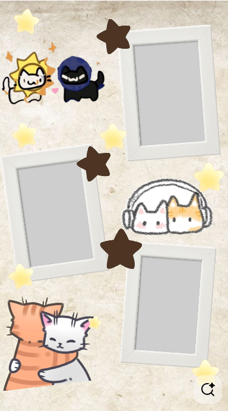
Você não tem noção
do quando uma mensagem sua muda o meu dia.
Do quanto eu gosto de abrir minha galeria
e ver você ali--
e querer ainda mais momentos,
ainda mais fotos,
ainda mais... Nós.
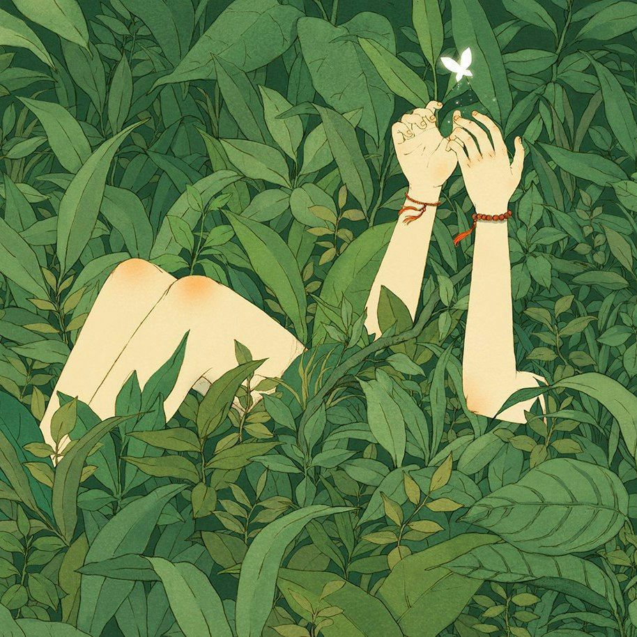
Eu adoro implicar com você,
e a maneira que você tenta implicar comigo,
A maneira como competimos um com outro.
Me lembra muito "Ma Meilleure Ennemie"
Minha querida inimiga.
Obrigado por ser meu primeiro amor.
Obrigado por me ensinar
o que é amar de verdade-
um amor puro,
sem segundas intenções.
Eu te amo, bobona ❤️
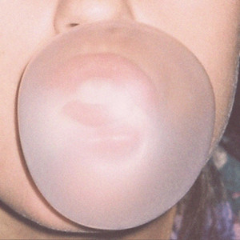
Nome
Autor